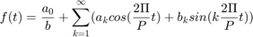
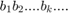
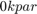
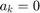

Práctica 5: Series de Fourier en tiempo continuo
Caudillo Barbosa Eric
Olea García Bryan
Robles Martínez Dario Antonio
Contents
- Objetivos
- INTRODUCCIÓN
- 1.-Con serie y espectro trigonometrico, no es necesario entregar el código, solo la aplicación al problema especifico, debe de indicar la función y los valores de sus coeficientes
- 2.-Con serie y espectro exponencial y A=3, no es necesario entregar el código, solo la aplicación al problema especifico, debe de indicar la función y los valores de sus coeficientes
- 3.- Con serie y espectro exponencial, no es necesario entregar el código, solo la aplicación al problema especifico, debe de indicar la función y los valores de sus coeficientes (sin incluir el procedimiento)
- 4.-Con serie y espectro exponencial, no es necesario entregar el código, solo la aplicación al problema especifico, debe de indicar la función y los valores de sus coeficientes (sin incluir el procedimiento)
- 5.-Con serie y espectro exponencial y sin incluir la gráfica de f, error ni energía del error, no es necesario entregar el código, solo la aplicación al problema especifico, debe de indicar la función y los valores de sus coeficientes (sin incluir el procedimiento)
- 6.-Elabore un código similar al COMPUTER EXAMPLE C6.2 que se encuentra al final de la sección 6.2 de Lathi para el Ejempo 6.2 con los datos indicados anteriormente (no utilice inline)
- 7.-Elabore un código que implemente el algoritmo de trapecio compuesto para , Utilice este código para aproximar del ejemplo de la práctica. Ahora implemente el código COMPUTER EXAMPLE C6.4 que se encuentra al final de la sección 6.6 de Lathi, y calcule nuevamente el los coeficientes del ejemplo propuesto. Muestre una tabla que contenga los coeficientes mencionados calculados con los dos algoritmos y de forma exacta, ¿Qué algortmo aproxima mejor a los coeficientes?, para esto compare los coefientes con el valor absoluto de la resta.
Objetivos
- Realizar gráficas de series de Fourier exponenciales y trigonométricas en tiempo continuo
- Manipulación de instrucciones en MATLAB
- Calculo númerico de los coeficientes de Fourier
INTRODUCCIÓN
Series de Fourier
¿Que es la serie de Fourier?
- Una función periódica de periodo
 , se puede representar en forma de una suma infinita de funciones armónicas es decir
, se puede representar en forma de una suma infinita de funciones armónicas es decir

donde y  son los denominados coeficientes de Fourier. (Una función periódica, se puede representar en forma de una suma infinita de funciones armónicas).
Si la función f(t) tiene simetría, algunos de los coeficientes resultan nulos.
- Si es una función par, , los términos son nulos
- Si es impar , los coeficientes son nulos
Función par
- Si la función es par
Ejemplo:
para el pulso rectangular simétrico de anchura y periodo se obtienen los siguientes coeficientes.
figure n=7; hold on x=[-1 -0.5 -0.5 0.5 0.5 1]; y=[0 0 1 1 0 0]; plot(x,y,'b','linewidth',2) x=linspace(-1,1,100); y=zeros(length(x),1);
- $
- $
syms t P k; ak=int(cos(pi*k*t),t,-0.5,0.5); subs(ak,k,sym('[1 2 3 4 5 6 7]'))
Warning: Support of character vectors that are not valid variable names or define a number will be removed in a future release. To create symbolic expressions, first create symbolic variables and then use operations on them. ans = [ 2/pi, 0, -2/(3*pi), 0, 2/(5*pi), 0, -2/(7*pi)]
Vamos a reconstruir la función f(t) a partir del desarrollo en serie de Fourier
figure n=7; hold on x=[-1 -0.5 -0.5 0.5 0.5 1]; y=[0 0 1 1 0 0]; plot(x,y,'b','linewidth',2) x=linspace(-1,1,100); y=zeros(length(x),1); for i=1:length(x) y(i)=1/2; for k=1:2:n y(i)=y(i)+(-1)^((k-1)/2)*2*cos(k*pi*x(i))/(k*pi); end end plot(x,y, 'r'); title(sprintf('Aproximación de Fourier: %i términos',n)) grid on hold off
Función impar
- Si la función es impar, 
Sea ahora la función de periodo
figure n=7; hold on x=[-1 -1 0 0 1 1]; y=[0 1 1 -1 -1 0]; plot(x,y,'b','linewidth',2) x=linspace(-1,1,100); y=zeros(length(x),1);
Es una función impar, los coeficientes a_{k} son nulos
- $
- $
syms t P k; bk=int(sin(pi*k*t),t,-1,0)-int(sin(pi*k*t),t,0,1); subs(bk,k,sym('[1 2 3 4 5 6 7]'))
Warning: Support of character vectors that are not valid variable names or define a number will be removed in a future release. To create symbolic expressions, first create symbolic variables and then use operations on them. ans = [ -4/pi, 0, -4/(3*pi), 0, -4/(5*pi), 0, -4/(7*pi)]
El desarrollo en serie es:
figure n=7; hold on x=[-1 -1 0 0 1 1]; y=[0 1 1 -1 -1 0]; plot(x,y,'b','linewidth',2) x=linspace(-1,1,100); y=zeros(length(x),1); for i=1:length(x) y(i)=0; for k=1:2:n y(i)=y(i)-4*sin(k*pi*x(i))/(k*pi); end end plot(x,y, 'r'); title(sprintf('Aproximación de Fourier: %i términos',n)) grid on hold off
Aproximación númerica de los coeficientes de Fourier exponencial compleja
Podemos calcular numéricamente mediante el uso de la DFT (la transformada discreta de Fourier)que utiliza las muestras de una señal periódica durante un período. El intervalo de muestreo es de segundos. Por lo tanto, hay número de muestras en un período . Para encontrar la relación entre y las muestras de

En la práctica, es imposible hacer que calcule el lado derecho de la ecuación.Podemos hacer pequeña, pero no cero, lo que hará hacer que los datos aumenten sin límite. Por lo tanto, ignoraremos el límite de en la ecuación con el entendimiento implícito de que es razonablemente pequeño El valor distinto de cero dará como resultado algún error de cálculo, que es inevitable en cualquier evaluación numérica de una integral. los el error resultante de una distinta de cero se denomina error de alias
T_0 = pi; N_0 = 256; T = T_0/N_0; t = (0:T:T*(N_0-1))'; M = 10; x = exp(-t/2); x(1) = (exp(-pi/2) + 1)/2; D_n = fft (x)/N_0; n = [-N_0/2:N_0/2-1]'; clf; subplot (2, 2, 1); stem(n, abs(fftshift (D_n)),'k'); axis ([-M M -.1 .6]); xlabel('n'); ylabel('|D_n|'); subplot (2, 2, 2); stem(n, angle(fftshift(D_n)),'k'); axis([-M M -pi pi]); xlabel ('n'); ylabel('\angle D n [rad]'); n = [0:M]; C_n(1) = abs(D_n(1)); C_n(2:M+1) = 2*abs (D_n(2:M+1)); theta_n(1) = angle(D_n(1)); theta_n(2:M+1) = angle(D_n(2:M+1)); subplot (2, 2, 3); stem(n,C_n,'k'); xlabel ('n'); ylabel('C_n'); subplot (2, 2, 4); stem(n,theta_n,'k'); xlabel ('n'); ylabel('\theta n [rad]');
1.-Con serie y espectro trigonometrico, no es necesario entregar el código, solo la aplicación al problema especifico, debe de indicar la función y los valores de sus coeficientes
f(t)=e^{-t/2}; 0<t<\pi
2.-Con serie y espectro exponencial y A=3, no es necesario entregar el código, solo la aplicación al problema especifico, debe de indicar la función y los valores de sus coeficientes
f(t)=12triangularPulse(t-0.5)-6 4 armónicos
d0=-0.1
dn=@(n) ((-1.5/pi*n)*sin(0.5*pi*n)-(1.5/pi*n)*sin(1.5*pi*n)+(1.5*i/pi*n)*cos(0.5*pi*n)-(1.5*i/pi*n)*cos(1.5*pi*n)-(9*i/pi.^2*n.^2)*sin(0.5*pi*n)+(3*i/pi.^2*n.^2)*sin(1.5*pi*n)+(3/pi.^2*n.^2)*cos(0.5*pi*n)-(3/pi.^2*n.^2)*cos(1.5*pi*n));
t0=-0.5;
tf=1.5;
f=@(t) 12.*triangularPulse(t-0.5)-6;
armo=4;
a=-7;
b=7;
sfc(t0,tf,dn,d0,f,armo,a,b)
% 15 armónicos
d0=-0.1
dn=@(n) ((-1.5/pi*n)*sin(0.5*pi*n)-(1.5/pi*n)*sin(1.5*pi*n)+(1.5*i/pi*n)*cos(0.5*pi*n)-(1.5*i/pi*n)*cos(1.5*pi*n)-(9*i/pi.^2*n.^2)*sin(0.5*pi*n)+(3*i/pi.^2*n.^2)*sin(1.5*pi*n)+(3/pi.^2*n.^2)*cos(0.5*pi*n)-(3/pi.^2*n.^2)*cos(1.5*pi*n));
t0=-0.5;
tf=1.5;
f=@(t) 12.*triangularPulse(t-0.5)-6;
armo=15;
a=-7;
b=7;
sfc(t0,tf,dn,d0,f,armo,a,b)
d0 = -0.1000 Warning: Imaginary parts of complex X and/or Y arguments ignored Warning: Imaginary parts of complex X and/or Y arguments ignored Warning: Imaginary parts of complex X and/or Y arguments ignored Warning: Using only the real component of complex data. d0 = -0.1000 Warning: Imaginary parts of complex X and/or Y arguments ignored Warning: Imaginary parts of complex X and/or Y arguments ignored Warning: Imaginary parts of complex X and/or Y arguments ignored Warning: Using only the real component of complex data.
3.- Con serie y espectro exponencial, no es necesario entregar el código, solo la aplicación al problema especifico, debe de indicar la función y los valores de sus coeficientes (sin incluir el procedimiento)
f(t)=rectangularPulse(t/pi); 4 armónicos
d0=0.5
dn=@(n) (2*sin(pi*n/2)/(pi*n));
t0=-pi/2;
tf=pi/2;
f=@(t) rectangularPulse(t./pi);
armo=4;
a=-7;
b=7;
sfc(t0,tf,dn,d0,f,armo,a,b)
% 15 armónicos
d0=0.5
dn=@(n) (2*sin(pi*n/2)/(pi*n));
t0=-pi/2;
tf=pi/2;
f=@(t) rectangularPulse(t./pi);
armo=15;
a=-7;
b=7;
sfc(t0,tf,dn,d0,f,armo,a,b)
d0 =
0.5000
d0 =
0.5000
4.-Con serie y espectro exponencial, no es necesario entregar el código, solo la aplicación al problema especifico, debe de indicar la función y los valores de sus coeficientes (sin incluir el procedimiento)
f(t)=|sin(t)| 4 armónicos
d0=2/pi;
dn=@(n) (2/pi*(1-4*n.^2));
t0=0;
tf=pi;
f=@(t) abs(sin(t));
armo=4;
a=-7;
b=7;
sfc(t0,tf,dn,d0,f,armo,a,b)
% 15 armónicos
d0=2/pi;
dn=@(n) (2/pi*(1-4*n.^2));
t0=0;
tf=pi;
f=@(t) abs(sin(t));
armo=15;
a=-7;
b=7;
sfc(t0,tf,dn,d0,f,armo,a,b)
5.-Con serie y espectro exponencial y sin incluir la gráfica de f, error ni energía del error, no es necesario entregar el código, solo la aplicación al problema especifico, debe de indicar la función y los valores de sus coeficientes (sin incluir el procedimiento)
f(t)=d(t) 4 armónicos
d0=1/3;
dn=1/3;
t0=0;
tf=3;
f=@(t) dirac(t);
armo=4;
a=-7;
b=7;
sfc(t0,tf,dn,d0,f,armo,a,b)
% 15 armónicos
d0=1/3;
dn=1/3;
t0=0;
tf=3;
f=@(t) dirac(t);
armo=15;
a=-7;
b=7;
sfc(t0,tf,dn,d0,f,armo,a,b)
Subscript indices must either be real positive integers or logicals.
Error in sfc (line 14)
sf=sf+dn(-n)*exp(w0*-n*t*j)+dn(n)*exp(w0*n*t*j);
Error in Practica5 (line 267)
sfc(t0,tf,dn,d0,f,armo,a,b)
6.-Elabore un código similar al COMPUTER EXAMPLE C6.2 que se encuentra al final de la sección 6.2 de Lathi para el Ejempo 6.2 con los datos indicados anteriormente (no utilice inline)
x = [0 3 0 -3 0 3 0 -3 0]; tx = -2:0.5:2; t = linspace (-2, 2,1000); sumterms = zeros(16, length(t)); sumterms(1,:) = 0; %a0 for n = 1:size(sumterms,1)-1; sumterms(n+1,:) = (((8*3)/((n^2)*(pi^2)))*sin(n*pi/2))*sin(n*pi*t); end x_N = cumsum (sumterms); ind = 0; for N = [0,1:2:size(sumterms, 1)-1], ind = ind+1; subplot (3,3,ind); plot (t,x_N(N+1,:),'b','linewidth',1); hold on; plot(tx,x,'k--'); axis ([-2 2 -4 4]); grid on; xlabel ('t'); ylabel (['x_{',num2str(N),'} (t)']); end
7.-Elabore un código que implemente el algoritmo de trapecio compuesto para , Utilice este código para aproximar del ejemplo de la práctica. Ahora implemente el código COMPUTER EXAMPLE C6.4 que se encuentra al final de la sección 6.6 de Lathi, y calcule nuevamente el los coeficientes del ejemplo propuesto. Muestre una tabla que contenga los coeficientes mencionados calculados con los dos algoritmos y de forma exacta, ¿Qué algortmo aproxima mejor a los coeficientes?, para esto compare los coefientes con el valor absoluto de la resta.
clear all;
close all; clc; b=pi; a=0; n_lim = 15; h = (b-a)/n_lim; T0 = pi; f = zeros(1,5); w = 0:4; %f(1,1)=0.504; f1 = figure; for n=0:4 f_0 = 1; f_pi = exp(-2*j*n*pi)*exp(-pi/2); fn = 0; for t=1:n_lim-1 fn = fn + exp(-2*j*n*(a+(h*t)))*exp(-((a+(h*t))/2)); end; f(1,n+1) = (1/T0)*(h/2)*(f_0 + 2*fn + f_pi); end; w = 0:4; subplot(2,1,1); stem(w,real(f)); subplot(2,1,2); stem(w,angle(f)); f2 = figure; T_0 = pi; N_0 = 256; T = T_0/N_0; t = (0:T:T*(N_0-1))'; M = 10; x = exp(-t/2); x(1) = (exp(-pi/2) + 1)/2; D_n = fft (x)/N_0; n = [-N_0/2:N_0/2-1]'; subplot (2, 2, 1); stem(n, abs(fftshift (D_n)),'k'); axis ([-M M -.1 .6]); xlabel('n'); ylabel('|D_n|'); subplot (2, 2, 2); stem(n, angle(fftshift(D_n)),'k'); axis([-M M -pi pi]); xlabel ('n'); ylabel('\angle D n [rad]'); n = [0:M]; C_n(1) = abs(D_n(1)); C_n(2:M+1) = 2*abs (D_n(2:M+1)); theta_n(1) = angle(D_n(1)); theta_n(2:M+1) = angle(D_n(2:M+1)); subplot (2, 2, 3); stem(n,C_n,'k'); xlabel ('n'); ylabel('C_n'); subplot (2, 2, 4); stem(n,theta_n,'k'); xlabel ('n'); ylabel('\theta n [rad]');